Cuentas, equipos y permisos¶
Qué es¶
AsterCC organiza el acceso en capas: equipo (la organización, base del modo multiempresa) → cuenta (quién entra al sistema) → agente (quien atiende llamadas, opcionalmente ligado a una cuenta) → rol (qué puede hacer esa cuenta o agente). Esta página cubre las cinco pantallas de gestión de esta capa y cómo se relacionan.
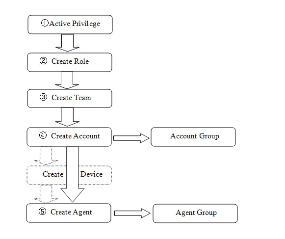
Cómo se usa¶
Equipos¶
Un equipo es una organización independiente dentro del mismo AsterCC — el mecanismo de multiempresa. Solo una cuenta con permiso de administrador de sistema puede crear equipos.
| Campo | Qué define |
|---|---|
| Nombre del equipo | Nombre visible del equipo |
| Identificador único | Slug interno, solo letras/números, no se puede cambiar después de creado |
| Máximo de cuentas / agentes / extensiones / colas / salas de conferencia | Límites de aprovisionamiento del equipo |
| Troncal / grupo de troncales de salida | Por dónde salen todas las llamadas de este equipo |
| Llamadas internas entre extensiones | Si las extensiones del equipo pueden llamarse entre sí por número interno |
| Visibilidad de grabaciones para el agente | Sin permiso / historial + grabación / solo historial |
| Grabación forzada | Si se activa, todas las cuentas y extensiones del equipo graban siempre, sin importar su configuración individual |
| Modo de pago | Sin límite, pospago (límite de saldo negativo permitido), prepago (se corta al agotar saldo) |
| Nombre para mostrar | Nombre amigable visto por el agente al iniciar sesión (máx. 15 caracteres) |
| Logo de la empresa | Se muestra tras el login del agente |
| Prefijo de marcación entre equipos | Prefijo que un equipo debe anteponer para llamar a una extensión interna de otro equipo |
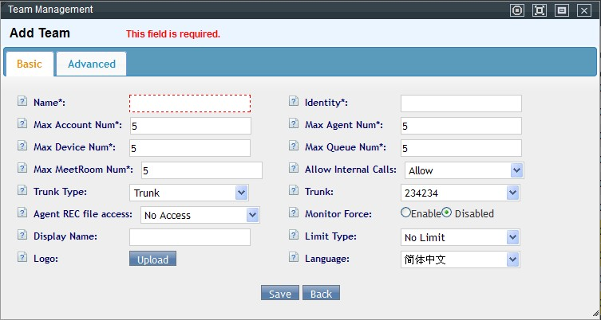
Datos avanzados incluyen información de contacto de la empresa, y tres campos de integración con sistemas externos:
- Dirección de recepción de eventos: AsterCC envía por HTTP POST todos los eventos de llamada del equipo a esta URL — para que un sistema externo registre el detalle de llamadas.
- Dirección de interfaz de negocio: endpoint para que un sistema externo obtenga eventos de llamada en tiempo real vía HTTP push (formato
http://<servidor>:<puerto>/publicapi/agentpull/<identificador-equipo>-md5(<cadena de verificación>)). - Cadena de verificación: actúa como contraseña — el evento se firma con el MD5 de esta cadena para que el receptor valide que el evento realmente viene de AsterCC.
Los mismos datos avanzados incluyen, de solo lectura: crédito actual y crédito total (gasto acumulado del equipo), crédito de cuenta (lo que el equipo debe recibir de sus cuentas según la tarifa de extensión) y crédito de sistema (lo que el equipo debe pagar según la tarifa de sistema) — útiles para conciliar los tres niveles de tarifa entre sí.
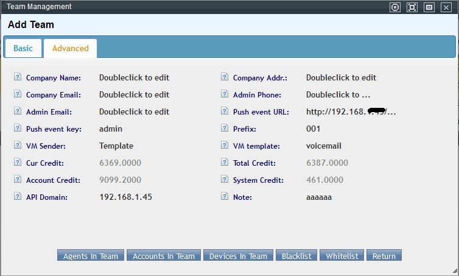
Warning
Tras configurar estos tres campos, hay que reiniciar el CTI desde Información en tiempo real del sistema → Información del sistema para que la conexión tome efecto.
Al editar un equipo ya creado aparecen accesos directos a sus agentes, cuentas y extensiones, y a la gestión de lista blanca/negra de ese equipo específicamente.
Cuentas¶
La cuenta es la unidad de acceso al sistema y, salvo que el equipo esté en modo "sin límite", también la unidad de facturación.
| Campo | Qué define |
|---|---|
| Nombre de usuario | Login — letras, números, guion bajo, @; único dentro del equipo |
| Contraseña | — |
| Apellido / Nombre | Identificación de la persona |
| Correo | Recibe notificaciones del sistema |
| Tipo de cuenta | Administrador de sistema / administrador de equipo / usuario — determina el alcance de gestión |
| Rol | Conjunto de permisos asignado (solo aplica a cuentas tipo "usuario") |
| Equipo | Solo aplica a administrador de equipo o usuario |
| Administrador de grupo de cuentas | Si esta cuenta gestiona un grupo de cuentas específico |
| Límite de crédito | Cuánto puede quedar en negativo si el modo de pago es pospago |
| Modo de pago | Hereda la lógica del equipo, pero configurable por cuenta |
| Grabación forzada | Igual que a nivel de equipo, pero por cuenta |
| Restricción de horario de exportación | Si esta cuenta debe respetar el horario de exportación configurado del sistema |
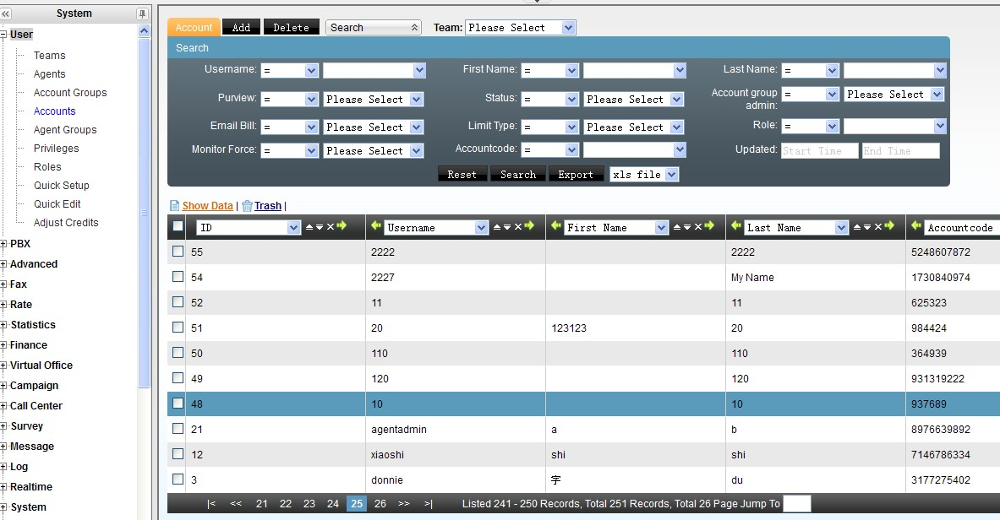
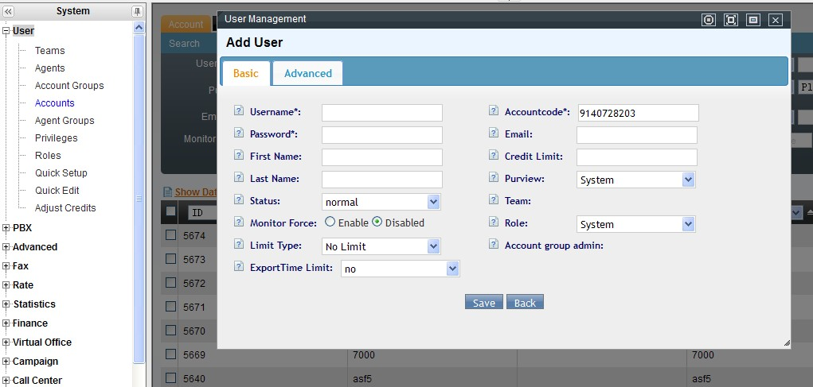
El sistema genera automáticamente un código de cuenta único e inmutable al crearla, usado internamente para identificarla. En datos avanzados aparecen además, de solo lectura: crédito entrante acumulado (suma generada por la tarifa de agente si la cuenta está ligada a un agente), crédito acumulado (total facturado a esta cuenta) y costo (costo generado por esta cuenta en el sistema) — más un campo opcional para subir una foto.
Al guardar una cuenta nueva tipo "usuario", el sistema ofrece directamente un asistente para darle una extensión — y tras guardar, aparece la barra de recarga habitual. Al editar una cuenta tipo usuario aparecen tres atajos: ver extensiones, agregar extensión, y configurar agente (da de alta un agente asociado a esta cuenta sin salir de la pantalla) — además de gestión de lista blanca/negra propia de la cuenta.
Grupos de cuentas¶
Agrupan cuentas para gestionar de forma conjunta su tarifa de extensión y, opcionalmente, asignarles una ruta de salida (troncal o grupo de troncales) común — el caso típico es diferenciar qué destinos puede marcar cada área de la empresa.
Agentes¶
Un agente es la unidad operativa de call center — necesita un número de agente (numérico, único por equipo, y usado para anunciarse al cliente, ej. "el agente 2000 le atiende"), una cuenta asociada, y un teléfono (extensión interna o número externo).
| Campo | Qué define |
|---|---|
| Número de agente | Identificador numérico del agente |
| Contraseña | Para check-in y operaciones telefónicas |
| Equipo / Cuenta | A qué equipo y cuenta pertenece |
| Modo de extensión | Fija (no cambia), autoadaptable (el sistema detecta y ajusta según qué teléfono esté registrado desde la IP del agente), o autoseleccionable (el agente puede cambiarla libremente al hacer check-in) |
| Número de destino | El número o extensión que realmente timbra cuando el agente recibe una llamada |
| Estado | Si el agente está habilitado |
| Rol | Determina qué ve el agente en el menú superior de la plataforma |
| Datos bancarios | Para liquidar agentes freelance/por comisión |
| Ignorar desvío de llamadas configurado en la extensión | Al iniciar sesión, ignora cualquier "call forwarding" que tenga la extensión |
| Contraseña de aplicación de negocio | Usada al autenticar llamadas a la API HTTP |
| Nombre de llamante / Número de llamante | Identificación mostrada al destino cuando este agente marca hacia afuera |
| Grupo de salida actual | Ver más abajo — resuelve el problema de identificar bajo qué contexto de negocio marca un agente cuando usa su extensión directamente |
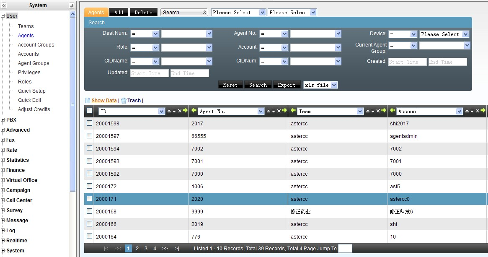
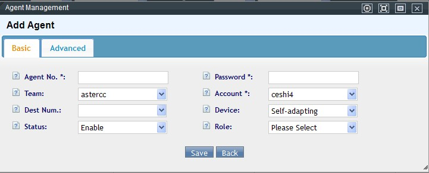
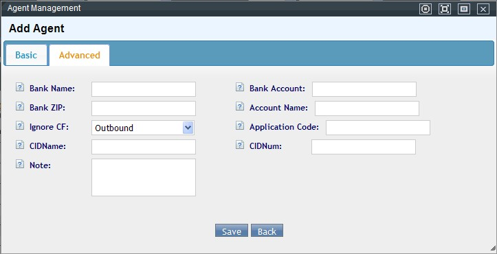
Si el agente usa clic para llamar desde la plataforma, el sistema primero marca el teléfono del propio agente (el "número de destino" configurado) y, una vez que el agente contesta, recién marca el número que quería contactar — no al revés.
En modo de extensión autoadaptable o autoseleccionable, si la extensión está registrada por red y su IP de registro no coincide con la IP desde la que el agente inició sesión, el sistema deja de aplicar la restricción de modo fijo/dinámico y permite al agente escribir libremente cualquier número de extensión.
Costos de llamadas entrantes/salientes del agente (según su tarifa de agente) aparecen como campos de solo lectura al editar, junto con botones para: pagar (liquidar el saldo pendiente a un agente freelance), ver detalle (abre el log financiero del agente), y ver grupos (a qué grupos de agentes pertenece).
Resolver a qué aplicación de negocio pertenece una llamada directa por extensión¶
Un agente puede pertenecer a varios grupos, cada uno atado a una aplicación de negocio distinta. Si el agente marca directo desde su extensión (sin pasar por el panel de marcación), el sistema no sabe a qué aplicación de negocio atribuir esa llamada — salvo que se configure:
- En la extensión del agente (PBX → Gestión de extensiones → datos avanzados), poner "modo de agente" = disponible.
- En el agente (Cuentas y permisos → Gestión de agentes), asignar un "grupo de salida actual".
- En ese grupo de agentes (Cuentas y permisos → Gestión de grupos de agentes), definir "tipo de aplicación de salida actual" y "aplicación de salida actual".
Con esto, toda llamada directa del agente por extensión queda asociada a esa aplicación de negocio, incluyendo la pantalla emergente correspondiente.
Grupos de agentes¶
El agente no trabaja solo — se organiza en grupos de agentes, la unidad de gestión operativa del call center (un agente puede pertenecer a varios).
| Campo | Qué define |
|---|---|
| Nombre del grupo | Identificación libre |
| Equipo | Solo agentes de ese equipo pueden sumarse |
| Agentes | Miembros del grupo — desde aquí también se define quién es administrador del grupo |
| Cola | Obligatoria si el grupo recibe llamadas entrantes — si no se define, el sistema ofrece crearla automáticamente |
| Enlace de trabajo | Página de negocio que ve el agente en su plataforma al pertenecer a este grupo |
| Enviar datos de login al enlace | Si la página embebida (posiblemente un CRM externo) recibe automáticamente usuario/contraseña del agente |
| Modo de trabajo | Todas las llamadas / a elección del agente / solo entrantes / solo salientes |
| Marcación saliente | Sin restricción, restringida (solo números del historial de contacto reciente), o deshabilitada — no aplica a números de una tarea de campaña activa |
| Permitir transferir a línea externa | Si el agente puede transferir una consulta a un número fuera del sistema |
| Tipo de turno | Por jefe de grupo o autogestionado |
| Gestión posterior (ACW) | Deshabilitada / al timbrar / al contestar / a elección del agente |
| Tipo y aplicación de salida actual | Ver sección anterior |
| Mostrar oficina virtual por defecto | Si el grupo trabaja principalmente oficina virtual, entra directo a esa vista al iniciar sesión |
| Pausa automática si no contesta | Si un agente no atiende una llamada asignada, pasa a pausa automáticamente |
| Enviar SIP especial de autorespuesta | Para teléfonos que soportan contestar automáticamente vía cabecera SIP |
| Alcance de consulta entre agentes | Ninguno / solo el propio grupo / cualquier agente del sistema |
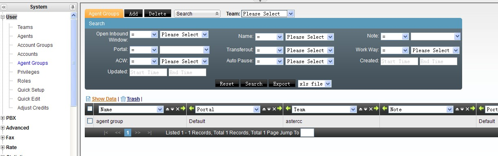
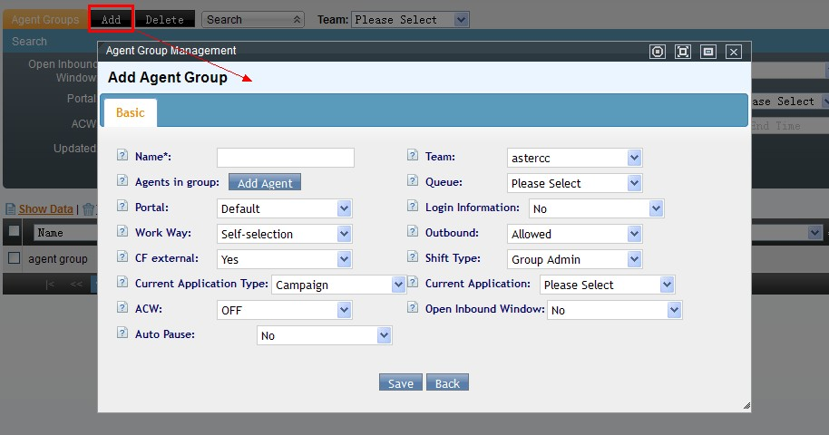
Administrador de grupo (jefe de equipo): por defecto obtiene permiso para limpiar datos de llamada con error, ver el estado de los agentes del grupo, usar monitoreo/intervención/interrupción/susurro, operar el marcador predictivo (si el grupo tiene una tarea con predictivo habilitada), y gestionar turnos.
Modalidades de conexión del agente dentro de un grupo:
| Modalidad | Comportamiento |
|---|---|
| Estático + en línea | Conectado permanentemente, requiere sesión web activa |
| Estático + fuera de línea | Conectado permanentemente, no requiere sesión web |
| Dinámico + en línea | El agente hace check-in/check-out manualmente, requiere sesión web activa |
| Dinámico + fuera de línea | El agente hace check-in/check-out manualmente, no requiere sesión web |
Tras cualquier cambio que afecte la cola del grupo, aparece la barra de recarga para aplicar el cambio.
Roles y permisos¶
Un rol es un conjunto de permisos reutilizable, de dos tipos: usuario (aplica a cuentas) o agente (aplica a agentes) — cada tipo opera solo sobre su propio tipo de objeto. El sistema trae cuatro roles por defecto: administrador de sistema (todos los permisos, no editable), administrador de grupo de agentes, agente, e inspector de calidad — los tres últimos editables.
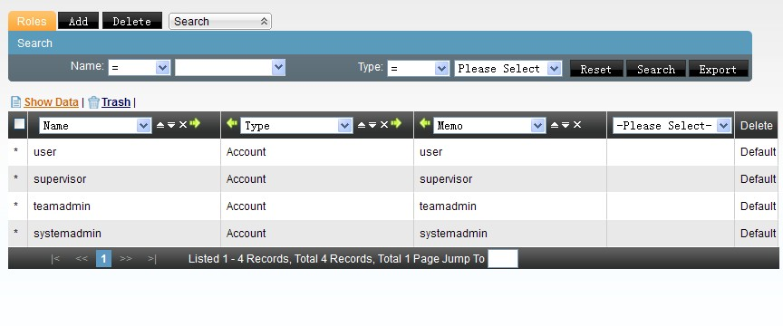
La pantalla de gestión de permisos define, a nivel de todo el sistema, qué permisos existen por módulo — solo el administrador de sistema puede modificarla. Los roles luego seleccionan un subconjunto de ese universo (agregar, editar, ver, eliminar, exportar por módulo). En otras palabras: primero se define qué es posible, y los roles definen qué se permite a cada perfil.
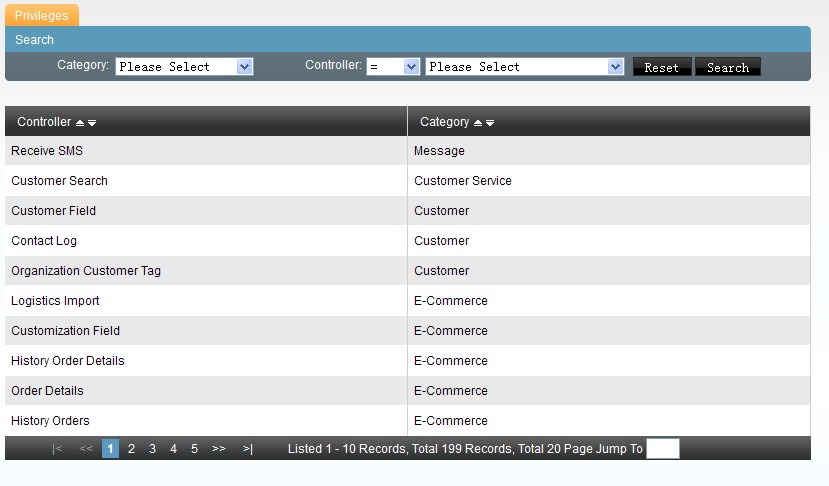
Configuración y edición rápida (herramientas de lote)¶
- Configuración rápida: genera cuentas + extensiones + agentes en una sola operación (ver Guía rápida para administradores). Permite elegir si crear cuentas nuevas automáticamente o usar una ya existente como base, y ofrece un botón de configuración detallada para ajustar parámetros de extensión antes de generar, y vista previa antes de guardar. Al guardar, el sistema ofrece exportar los registros creados (incluidas las contraseñas generadas) a un archivo CSV — útil para distribuir credenciales sin tener que consultarlas una por una.
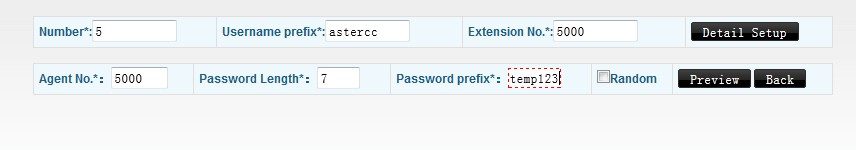
- Edición rápida: aplica un cambio a muchas extensiones, agentes o cuentas a la vez. Para cuentas en lote permite: agregar un prefijo o sufijo al nombre de usuario, cambiar estado (habilitar/deshabilitar), activar o desactivar grabación forzada en las extensiones de las cuentas seleccionadas, cambiar forma de pago, reasignar rol, y activar/desactivar el envío de correo de factura. Para extensiones, incluye resetear contraseñas con un prefijo común (combinado con un sufijo variable). Incluye una vista previa mostrando cómo quedaría el primer registro antes de aplicar a todos.
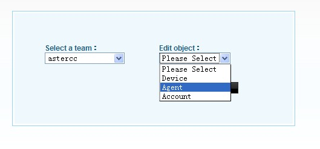
Finanzas de usuario¶
Pantalla para ajustar manualmente el saldo de un equipo (solo accesible por administrador de sistema) o de las cuentas dentro de un equipo (accesible por administrador de ese equipo) — operaciones de recarga o descuento con monto y nota, quedando como un registro de auditoría no editable después de guardado.
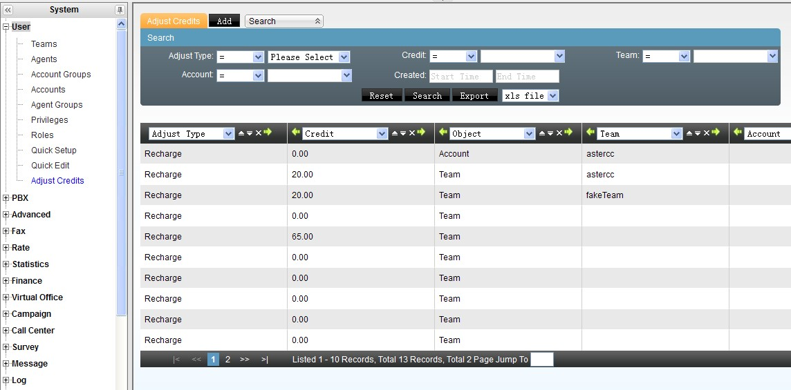
Referencia rápida¶
| Tarea | Dónde |
|---|---|
| Crear un equipo | Cuentas y permisos → Gestión de equipos |
| Crear cuentas/agentes en lote | Cuentas y permisos → Configuración rápida |
| Editar varias cuentas/agentes a la vez | Cuentas y permisos → Edición rápida |
| Gestionar cuentas | Cuentas y permisos → Gestión de cuentas |
| Gestionar agentes | Cuentas y permisos → Gestión de agentes |
| Gestionar grupos de agentes (colas) | Cuentas y permisos → Gestión de grupos de agentes |
| Gestionar grupos de cuentas | Cuentas y permisos → Gestión de grupos de cuentas |
| Gestionar roles | Cuentas y permisos → Gestión de roles |
| Definir permisos por módulo | Cuentas y permisos → Gestión de permisos (solo admin de sistema) |
| Ajustar saldo de equipo/cuenta | Cuentas y permisos → Finanzas de usuario |
Fuentes¶
raw/zh/模块使用说明/账户和权限管理/角色管理.txtraw/zh/模块使用说明/账户和权限管理/权限管理.txtraw/zh/模块使用说明/账户和权限管理/团队管理.txtraw/zh/团队管理.txtraw/zh/模块使用说明/账户和权限管理/坐席管理.txtraw/zh/模块使用说明/账户和权限管理/坐席组管理.txtraw/zh/模块使用说明/账户和权限管理/账号管理.txtraw/zh/模块使用说明/账户和权限管理/账号组管理.txtraw/zh/模块使用说明/账户和权限管理/用户财务管理.txtraw/zh/模块使用说明/账户和权限管理/快速编辑.txtraw/zh/模块使用说明/账户和权限管理/快速设置.txtraw/zh/模块使用说明/astercc账户结构.txtraw/zh/模块使用说明/账户和权限管理.txtraw/en/module_manual/user.txtraw/en/module_manual/user/account.txtraw/en/module_manual/user/account_group.txtraw/en/module_manual/user/adjust_credits.txtraw/en/module_manual/user/agent.txtraw/en/module_manual/user/agent_group.txtraw/en/module_manual/user/privilege.txtraw/en/module_manual/user/quick_edit.txtraw/en/module_manual/user/quick_setup.txtraw/en/module_manual/user/role.txtraw/en/module_manual/user/team.txtraw/en/module_manual/astercc_structure.txt